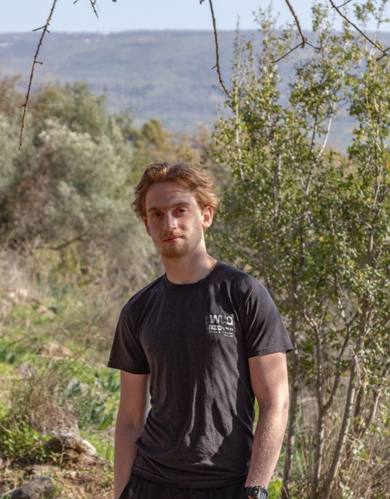
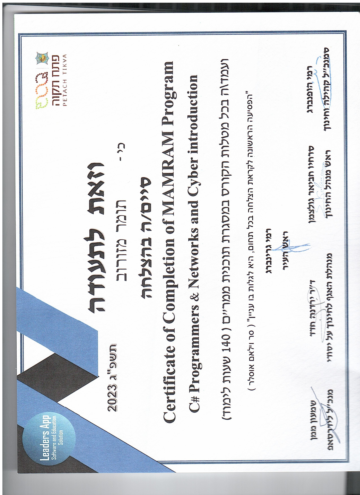
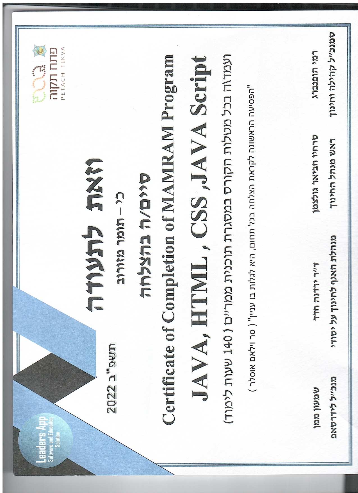
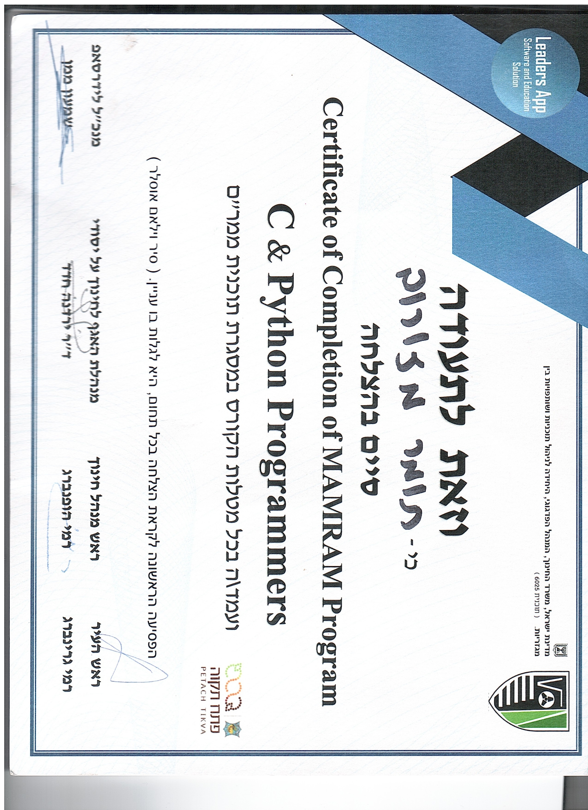

I’m a curious and driven Computer Science student with a deep passion for building things that make life better — whether it's a full-stack application, an Android utility, or an intelligent chess game with AI-powered analysis.
I enjoy exploring the intersection between technology, creativity, and meaning. Coding is not just a skill I practice — it’s a language I use to bring ideas to life. I’ve worked on a wide range of projects, from automating mobile testing flows using Appium to developing secure login systems and syncing real-time chess gameplay between users.
When I’m not coding, I’m learning. I explore topics like cybersecurity and networking. I balance logic with introspection, and I believe that a great developer is also someone who understands people, patterns, and purpose.
I’m currently studying Computer Science at Amal Bet High School, Petah Tikva, focusing on Python, Java, C#, mobile app development, and web technologies. I’ve also explored areas like cybersecurity, networking, and machine learning in my self-learning journey.
I also have studied 5 years in Mamram Project, and learned Communications and hardware, C, Python, DevOps, databases, java, .NET, project management, QA and Cyber.
✔ Created multiple full-stack applications
✔ Built a few cool games like multiplayer chess app with AI analysis
✔ Self-learned advanced topics like machine learning, networking and algorithms.
Here are some of the diplomas and certificates I’ve earned during my studies and personal development.


